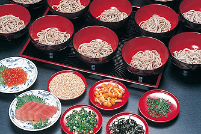
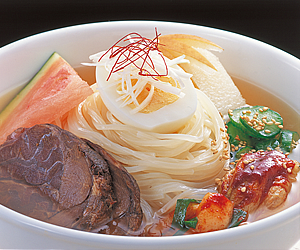
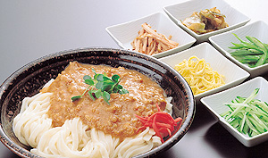

岩手の魅力

わんこそば

「わんこそば」は、祖先から伝わる「おもてなしの心」から生まれたこの地独特の伝統食文化です。宴の席で 大勢のお客様をもてなすために考えられたと伝えられています。 一口大の小分けにしたお蕎麦を様々な薬味と 共にたっぷりと味わっていただけます。店舗によっても異なりますが15杯前後で通常のもりそば一杯分。 お給仕さんとの掛け合いも楽しい、盛岡ならではの「わんこそば」をぜひご賞味ください。
盛岡冷麺

「盛岡冷麺」は、朝鮮半島北部出身で日本に移住してきた食道園の青木輝人さんの手により盛岡で誕生しました。 小麦粉と澱粉による強いコシの麺が独特の歯ざわりを生み出しています。 スープは牛骨・鳥肉等を煮込んで味付けしており、 飲み心地良くコクもたっぷりでキムチの辛さと相性ぴったりです。辛味が苦手な人もキムチの量で辛さを調節できます。そして、 ゆで卵、キュウリ、季節の果物などが盛りつけられることで多彩な味になります。 それぞれのお店と製麺業者が努力と工夫を重ねた盛岡冷麺の味を皆さんぜひお試しください。
盛岡じゃじゃ麺

「盛岡じゃじゃ麺」は、もともと「炒めみそうどん」という意味です。中国北東部の麺を参考に、白龍の高階貫勝さんが屋台から 始めた麺です。 麺と特製味噌を良く混ぜ合わせ、お好みで、おろししょうが・酢・にんにく・ラー油を加えて食べてください。 食べる程にくせになる味わいです。なお、麺と具は全部食べきらずに少しだけ残しておき、「ちーたんたん（鶏蛋湯）」と注文 してください。おいしい玉子スープを味わうことができます。